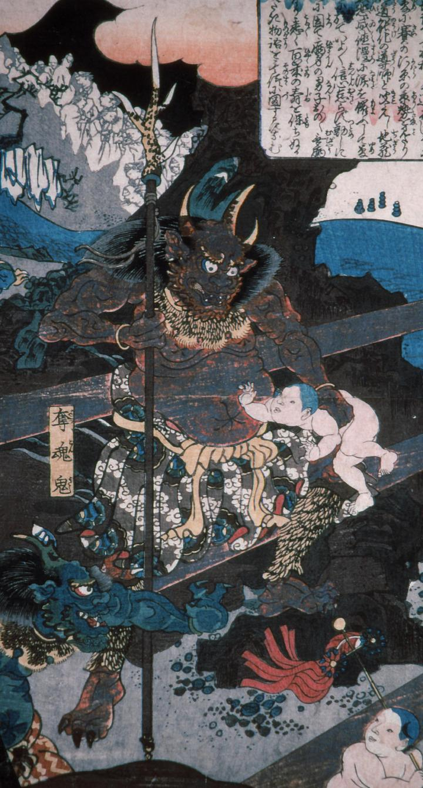

鬼；オニ

茶色い鬼。仁王立ちで鹿杖を右手に持ち、左手は子供の胴を鷲掴みにしている。頭には2本の角が生え、手足には鋭い爪がある。虎皮の襟巻きと脚絆を身に着けている。
著作者：歌川貞重／出典：親書誌：A5_hermitage_0001：（賽の河原；サイノカワラ）／日付：2011／資源識別子：A5_hermitage_0001_0002_0000
Copyright (c)2010- International Research Center for Japanese Studies, Kyoto, Japan. All rights reserved.